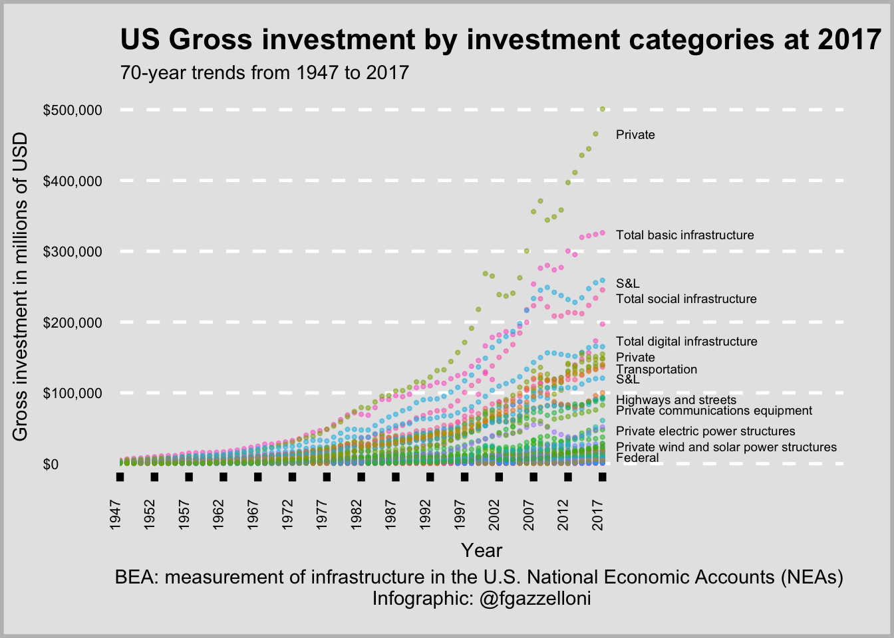
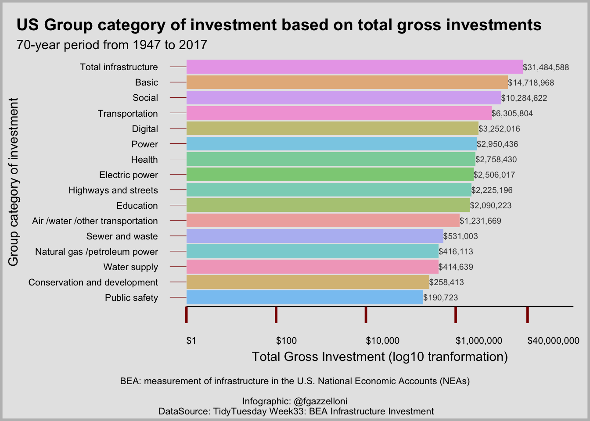
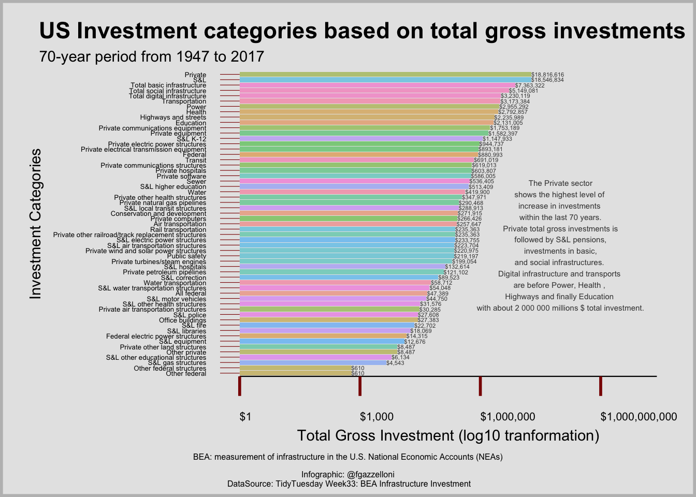
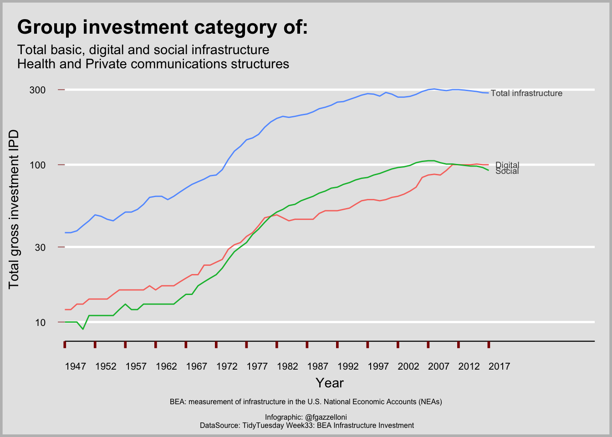
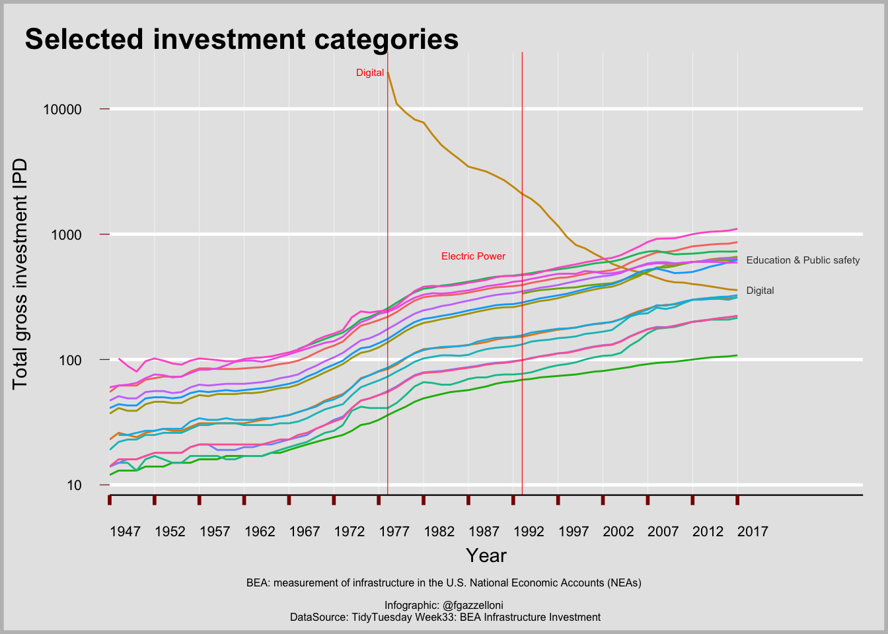

3 BEA Infrastructure Investment
Introduction
The measurement of infrastructure in the U.S. National Economic Accounts (NEAs) considers different metrics, provided are the resources devoted to different types of infrastructure each year and a useful overview of trends.
Classification of investment categories is provided by North American Industry Classification System (NAICS)
Types of infrastructure:
- Basic: transportation and utilities
- Social: pubblic safety, education and health
- Digital: it excludes servers owned by private firms outside of NAICS 518 and 519
the analysis spans through 70 Years of investments from 1947 to 2017.
3.1 Data
This analysis starts with analysing the classification of the investment categories by looking at:
3.1.1 Original data
The original datasets provided by the website are very useful to check whether the category and the meta category variables are homogeneous within the data sets:
1 - Investment data set:
Investment data set is extracted from the original .xlsx file and shows the basic structure of the group categories on which the analysis is based.
df_inv_raw <- readxl::read_excel("data/infrastructure-data-may-2020.xlsx", sheet = "cu$inv",skip = 2)df_inv_raw <- df_inv_raw %>%
rename(group = ...1, category = ...2) %>%
filter(!is.na(category)) %>%
mutate(
meta_cat = if_else(!is.na(group), category, NA_character_),
group_num = group,
.after = "category"
) DT::datatable(df_inv_raw %>% select(meta_cat,group,category))In addtion it contains the gross investment variable which is the variable that will be used in the analysis as one of the factors to construct the Implicit Price Deflators index.
names(investment)## [1] "category" "meta_cat" "group_num" "year" "gross_inv"2 - Chain investment data set:
It is extracted as the same as the investment set and it contains the same group of category variables except for one element in the category which is missing, it will be shown in more details further below in the analysis.
It doesn't contains the gross investment variable but it the gross investment chain instead.
names(chain_investment)## [1] "category" "meta_cat" "group_num" "year"
## [5] "gross_inv_chain"3 - IPD: Implicit Price Deflators data set:
DT::datatable(df_IPD_inv_raw %>% select(meta_cat,group,category))ipd <- df_IPD_inv_raw %>%
fill(meta_cat, group_num) %>%
pivot_longer(names_to = "year", values_to = "gross_inv_ipd", cols = `1947`:`2017`,
names_transform = list(year = as.integer)) %>%
filter(is.na(group)) %>%
select(-group) IPD set contains one more meta category as well as one more group number for the GDP element of the vector, which corresponds to group category number 0.
In fact the script for the IPD variable changes slightly with the addition of one more line of code.
It also contains the gross investment ipd variables whixh is the object of this study.
ipd <- ipd %>%
mutate(meta_cat = if_else(category == "GDP", "GDP", meta_cat))
names(ipd)## [1] "category" "meta_cat" "group_num" "year"
## [5] "gross_inv_ipd"3.1.2 TidyTuesday data
Data can also be loaded via:
tuesdata <- tidytuesdayR::tt_load(2021, week = 33)##
## Downloading file 1 of 3: `ipd.csv`
## Downloading file 2 of 3: `chain_investment.csv`
## Downloading file 3 of 3: `investment.csv`tidytuesdayR::readme(tuesdata)3.2 Meta Categories and sub-groups
The original data sets are very useful to check whether the investments classified within their categories are homogeneous within the other data sets.
The analysis starts with checking of the three data sets, to see what are the common categories and if there are any differences. Next step would be to unify the three data sets to make a model for the Implicit Price Deflators.
The first data set Investment is the one used for understanding the composition of the variables. The other two are quite similar except for the investment variable, and two other differences in group category.
Let's start having a look at any missing values:
investment <- tuesdata$investment
DataExplorer::profile_missing(investment)## # A tibble: 5 × 3
## feature num_missing pct_missing
## <fct> <int> <dbl>
## 1 category 0 0
## 2 meta_cat 0 0
## 3 group_num 0 0
## 4 year 0 0
## 5 gross_inv 0 0No values are missing in investment which is made of 5 variables:
- category: Category of investment (60 categories)
- meta_cat: Group category of investment (16 meta categories)
- group_num: Group number of investment (1 to 20 number of sub-group of investment category)
- year: Year of investment (from 1947 to 2017)
- gross_inv: Gross investment in millions of USD (which ranges from -194 to 500 900 millions $)
The meta_cat vector is the Group category of investment, and it has a sub-group numeric version named group_num, and a sub-sub-group of more specific categories of investments named: category.
The last variable is gross_inv i.e. Gross investment which is the sum of gross private domestic investment, government gross investment, and balance on current account, national income and product accounts.
DT::datatable(head(investment,3))3.2.1 Group category of investment
16 meta_cat:
DT::datatable(investment%>%count(meta_cat))investment <- investment %>%
mutate(meta_cat = case_when(meta_cat=="Total basic infrastructure" ~ "Basic",
TRUE~meta_cat ))3.2.2 Group number of investment
20 sub-group of the meta_cat corresponding to group_num:
DT::datatable(investment %>% count(group_num))3.2.3 Category of investment
60 sub-sub-group category vector:
DT::datatable(investment %>% count(category))The list of category contains a specification of the classification method for some of the elements in the vector, such as:
- Private communications equipment in NAICS 515, 517, 518, and 519
- Private computers in NAICS 515, 517, 518, and 519
- Office buildings, NAICS 518 and 519
- Private software in NAICS 515, 517, 518, and 519
These elements are part of the Digital meta category of investment and the numbers at the ends are to specify that they are classified by the NAICS and only those classified in North America are accepted within the list of digital investments. So, other form of digital investments are not considered in this study.
investment <- investment %>%
mutate(category = case_when(
category=="Private communications equipment in NAICS 515, 517, 518, and 519"~"Private communications equipment",
category=="Private computers in NAICS 515, 517, 518, and 519"~"Private computers",
category=="Office buildings, NAICS 518 and 519"~"Office buildings",
category=="Private software in NAICS 515, 517, 518, and 519"~"Private software",
TRUE~category)) 3.2.4 Exploratory analysis - Investment
Exploratory analysis on Gross investments shows an increase in investments in the private sector as the most flourishing category within the last 70 years, followed by basic, S&L and social investments in infrastructures. Digital infrastructure and transports are still below 200 000 millions $. To be noted is that the private category for gross investment is still divided by amount of investments, but as a whole it releases the stronger increase over time.
plot1
A second visualization of the gross investment shows the category with the highest level of gross investment within the last 70 years in millions $.
plot2
plot3
Before continuing with other visualizations of investment trends, let's check the other data sets to see the differences and then decide if to make a unified dataframe to use for comparison of gross investments, chained investments with implicit price deflactors (IPDs).
The first 4 variables are in common within all datasets, the next step is to check whether there are differences within the first 4 variables.
The second set doesn't contains differences in classification when compared with investment set.
chain_investment <- tuesdata$chain_investment
DataExplorer::profile_missing(chain_investment)## # A tibble: 5 × 3
## feature num_missing pct_missing
## <fct> <int> <dbl>
## 1 category 0 0
## 2 meta_cat 0 0
## 3 group_num 0 0
## 4 year 0 0
## 5 gross_inv_chain 0 0chain_investment <- chain_investment%>%
mutate(meta_cat = case_when(meta_cat=="Total basic infrastructure" ~ "Basic",
TRUE~meta_cat ))59 chain investment categories:
chain_investment <- chain_investment %>%
mutate(category=case_when(category=="Private communications equipment in NAICS 515, 517, 518, and 519"~"Private communications equipment",
category=="Private computers in NAICS 515, 517, 518, and 519"~"Private computers",
category=="Office buildings, NAICS 518 and 519"~"Office buildings",
category=="Private software in NAICS 515, 517, 518, and 519"~"Private software",
TRUE~category)) "Office buildings" is the only category in "investment" df which doesn't appear in "chain_investment" df.
cat <- chain_investment %>% count(category) %>% select(-n) %>% unlist()
investment %>% filter(!category %in% cat) %>%
count(category)## # A tibble: 1 × 2
## category n
## <chr> <int>
## 1 Office buildings 71Implicit Price Deflators (IPDs). An implicit price deflator is the ratio of the current-dollar value of a series, such as gross domestic product (GDP), to its corresponding chained-dollar value, multiplied by 100.
ipd <- tuesdata$ipd
DataExplorer::profile_missing(ipd)## # A tibble: 5 × 3
## feature num_missing pct_missing
## <fct> <int> <dbl>
## 1 category 0 0
## 2 meta_cat 0 0
## 3 group_num 0 0
## 4 year 0 0
## 5 gross_inv_ipd 206 0.0337meta_inv <- investment%>%count(meta_cat)%>%select(-n)%>%unlist()
ipd%>%filter(!meta_cat%in%meta_inv)%>%count(meta_cat)## # A tibble: 4 × 2
## meta_cat n
## <chr> <int>
## 1 GDP 71
## 2 Health care 497
## 3 Infrastructure 426
## 4 Total basic infrastructure 213ipd <- ipd%>%
mutate(meta_cat = case_when(meta_cat=="Total basic infrastructure" ~ "Basic",
meta_cat=="Infrastructure"~"Total infrastructure",
meta_cat=="Health care"~"Health",
TRUE~meta_cat ))ipd <- ipd %>%
mutate(category=case_when(category=="Private communications equipment in NAICS 515, 517, 518, and 519"~"Private communications equipment",
category=="Private computers in NAICS 515, 517, 518, and 519"~"Private computers",
category=="Office buildings, NAICS 518 and 519"~"Office buildings",
category=="Private software in NAICS 515, 517, 518, and 519"~"Private software",
TRUE~category)) 60 categories are in the "Implicit Price Deflators" df
ipd_cats <-ipd %>% count(category)%>%unlist()comparing it with the "investment" and "chain investment" categories, 6 of those have a slightly different name, the best wat to handle this for obtaining a unified data set made of the three sets is to have homogeneous values for the category variable.
These are the 6 categories in ipd to be changed:
cat_investment <- investment%>%count(category)%>%select(-n)%>%unlist()
ipd_cats_to_be_renamed <- ipd%>%filter(!category%in%cat_investment)%>%count(category)%>%select(-n)%>%unlist()
ipd_cats_to_be_renamed## category1 category2
## "Basic" "Communications structures"
## category3 category4
## "Digital" "GDP"
## category5 category6
## "Health care" "Social"These 6 categories are in the investment data set and we want to use these names for the category variable for all the sets:
selected_categories <- investment %>% filter(!category %in% ipd_cats) %>% count(category,group_num) %>% arrange(group_num)
selected_categories## # A tibble: 6 × 3
## category group_num n
## <chr> <dbl> <int>
## 1 Total basic infrastructure 1 71
## 2 Total digital infrastructure 1 71
## 3 Total social infrastructure 1 71
## 4 Health 17 71
## 5 Office buildings 22 71
## 6 Private communications structures 22 71ipd <- ipd %>%
mutate(category = case_when(
category == "Basic" ~ "Total basic infrastructure",
category == "Social" ~ "Total social infrastructure",
category == "Digital" ~ "Total digital infrastructure",
category == "Health care" ~ "Health",
category == "Communications structures" ~ "Private communications structures",
TRUE ~ category
))Let's see how meta_cat of these 6 categories perform:
plot4
plot5
Investment on Electric power only appear starting from 1993 with a ratio of 336:
list<-total_inv_df %>% filter(year==1992)%>%count(meta_cat)%>%select(-n)%>%unlist()
total_inv_df %>% filter(year==1993,!meta_cat%in%list)## # A tibble: 1 × 3
## year meta_cat total
## <dbl> <chr> <dbl>
## 1 1993 Electric power 336meta_cat are the Group category of investment, there are 4 values which are different within the sets:
- Health care = Health
- Infrastructure = Total infrastructure
- Basic = Total basic infrastructure
- GDP
We need to add GDP as further meta_cat for both investment and chain_investment sets, and chenge the other three values into common values as shown above.
inv_meta_cats <- investment %>% count(meta_cat) %>% select(-n) %>% unlist()
ipd %>% filter(!meta_cat %in% inv_meta_cats) %>% count(meta_cat)## # A tibble: 1 × 2
## meta_cat n
## <chr> <int>
## 1 GDP 71GDP is the only left meta_cat category, that it is not present in the other sets.
ipd %>% filter(!meta_cat %in% inv_meta_cats) %>% count(meta_cat)## # A tibble: 1 × 2
## meta_cat n
## <chr> <int>
## 1 GDP 71What about category variable? What are the differences in ipd set when compared with the other two?
As seen investment and chain_investment sets have the same category variables except for one variable which is "Office buildings", so next step is to find the differences of this vector in ipd set:
cat_inv <- investment %>% count (category) %>% select(-n) %>% unlist
ipd %>% filter(!category %in% cat_inv) %>% count(category)## # A tibble: 1 × 2
## category n
## <chr> <int>
## 1 GDP 71we need to convert these values in ipd set:
- Basic = Total basic infrastructure
- Communications structures = Private communications structures
- Digital = Total digital infrastructure
- GDP
- Health care = Health
- Social = Total social infrastructure
Finally, GDP is the category group number 0 which is not in investment and chain investment sets, but only in IPD. While "Office buildings" is only in investment.
ipd <- ipd %>%
mutate(category = case_when(
category=="Basic"~"Total basic infrastructure",
category=="Communications structures"~"Private communications structures",
category=="Digital"~"Total digital infrastructure",
category=="Health care"~"Health",
category=="Social"~"Total social infrastructure",
TRUE~category))ipd %>% filter(!category %in% cat_inv) %>% count(category)## # A tibble: 1 × 2
## category n
## <chr> <int>
## 1 GDP 71The new data sets will contain the 4 common variables plus these other three:
- gross_inv: Gross investment in millions of USD
- gross_inv_chain: Gross investment (chained 2021 dollars) in millions of USD
- gross_inv_ipd: Implicit Price Deflators (IPDs)
The Implicit Price Deflators (IPDs) is obtained as an index result of:
[ (gross_inv *100) / (gross_inv_chain *100) ] *100The ipd set contains some missing values, these values are the results of 0 investments for some of the selected categories within the years.
ipd %>% filter(is.na(gross_inv_ipd)) %>% count(meta_cat,category)## # A tibble: 9 × 3
## meta_cat category n
## <chr> <chr> <int>
## 1 Air /water /other transportation Private local transit structures 71
## 2 Air /water /other transportation Transit 2
## 3 Digital Private computers 31
## 4 Digital Private software 31
## 5 Electric power Federal electric power structures 1
## 6 Electric power Private wind and solar power structures 46
## 7 Health S&L equipment 21
## 8 Power Federal 1
## 9 Transportation Transit 2Let's calculate the gross_inv_ipd vector with the formula, assigning its value to a different name vector and then check the missing values. To do this we need to join the three sets together:
investment_full <- investment%>%
full_join(chain_investment,by=c("category","meta_cat","group_num","year")) %>%
full_join(ipd,by=c("category","meta_cat","group_num","year")) %>%
#filter(meta_cat=="GDP"| category=="Office buildings") %>%
mutate(gross_inv_chain = if_else(category=="Office buildings",0,gross_inv_chain),
gross_inv_ipd = if_else(gross_inv<=0,0,gross_inv_ipd),
gross_inv_ipd2 = if_else(gross_inv_chain==0,0,((gross_inv/100)/(gross_inv_chain/100))*100),
gross_inv_ipd2 = round(gross_inv_ipd2,2))
#DataExplorer::profile_missing()